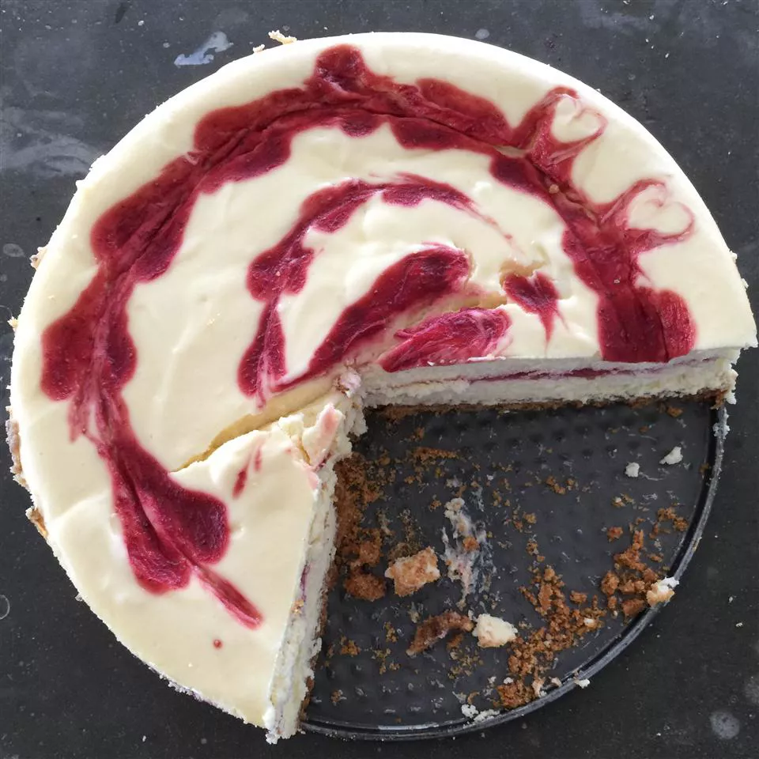

Strawberry Cheesecake
Recipe by
Kathy Higgins

Strawberry cheesecake is perfect for any occassion. The following recipe will
take an hour of preparation time, 50 minutes of cooking, and at least 9 hours
for refrigeration. Thereafter, you can expect to serve 12 people with creamy and
delicious cheesecake!
Ingredients:
- Crust
- 1 1/4 cups graham cracker crumbs
- 1/3 cup butter, melted
- 1/4 cup white sugar
- 2 teaspoons ground cinammon
- Filling
- two 10-ounce packages frozen sweetened sliced strawberries
- 1 tablespoon cornstarch
- three 8-ounce packages softened cream cheese
- 14-ounce sweetened condensed milk
- 1/4 cup lemon juice
- 1/2 teaspoon vanila extract
- 3 eggs
- 1 tablespoon water (optional)
Directions:
- Make crust: Combine graham cracker crumbs, butter, sugar, and cinnamon in a bowl; mix well.
Press onto the bottom of an ungreased 9-inch springform pan. Place in the refrigerator to chill for 30 minutes.
- Preheat the oven to 300 degrees F (150 degrees C).
- Make filling: Place strawberries and cornstarch into a blender. Cover and puree until smooth.
- Pour strawberry sauce into a saucepan and bring to a boil over high heat. Boil and stir until sauce is thick and shiny, about 2 minutes.
Set aside 1/3 cup strawberry sauce; cool. Cover and refrigerate remaining sauce for serving.
- Beat cream cheese in a mixing bowl with an electric mixer until light and fluffy; gradually beat in condensed milk.
Mix in lemon juice and vanilla extract, then beat in eggs on low speed until just combined.
- Pour 1/2 of the cream cheese mixture over crust; drop 1/2 of the reserved strawberry sauce by 1/2 teaspoonfuls on cream cheese layer.
Carefully spoon remaining cream cheese mixture over sauce; drop remaining strawberry sauce by 1/2 teaspoonfuls on top. Cut through the top layer only with a knife to swirl strawberry sauce.
- Bake in the preheated oven until the center is almost set, 45 to 50 minutes.
- Cool on a wire rack for 10 minutes. Carefully run a knife around the edge of the pan to loosen; cool for 1 hour at room temperature. Refrigerate 8 hours to overnight before serving.
- Serve reserved strawberry sauce with cheesecake. If sauce is too thick, stir in water.